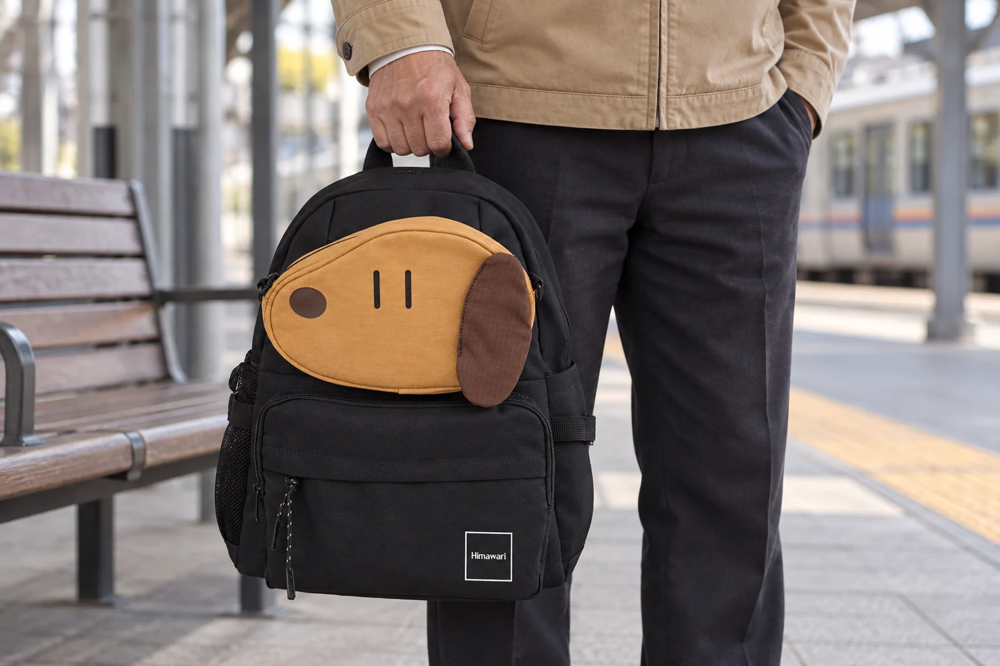
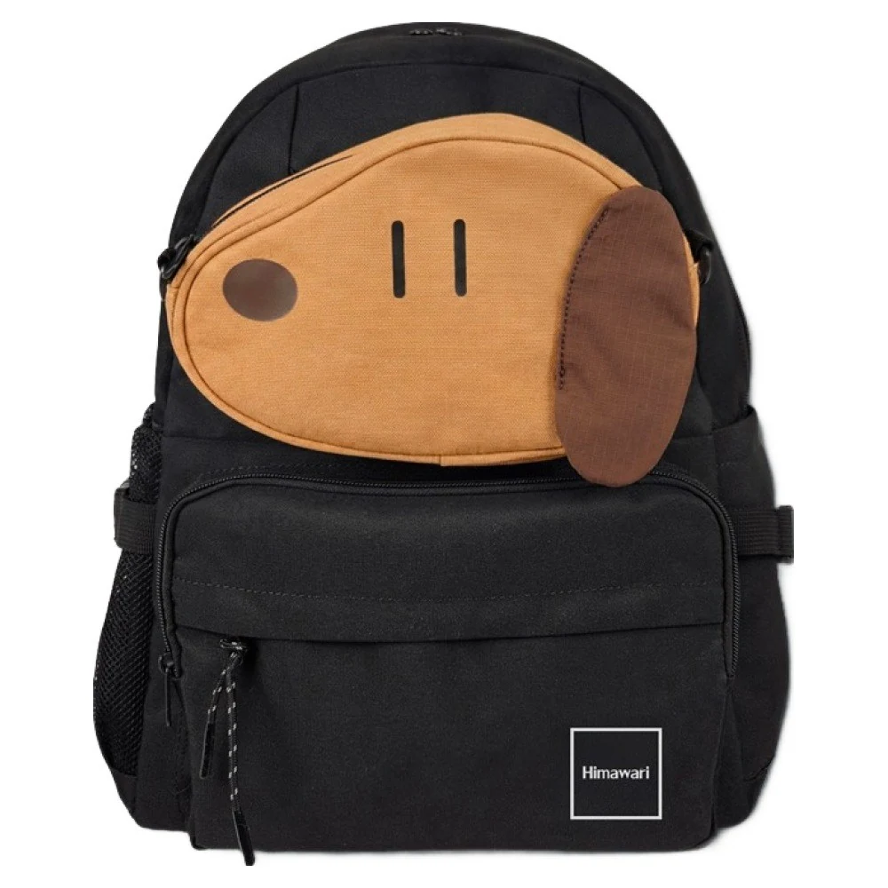
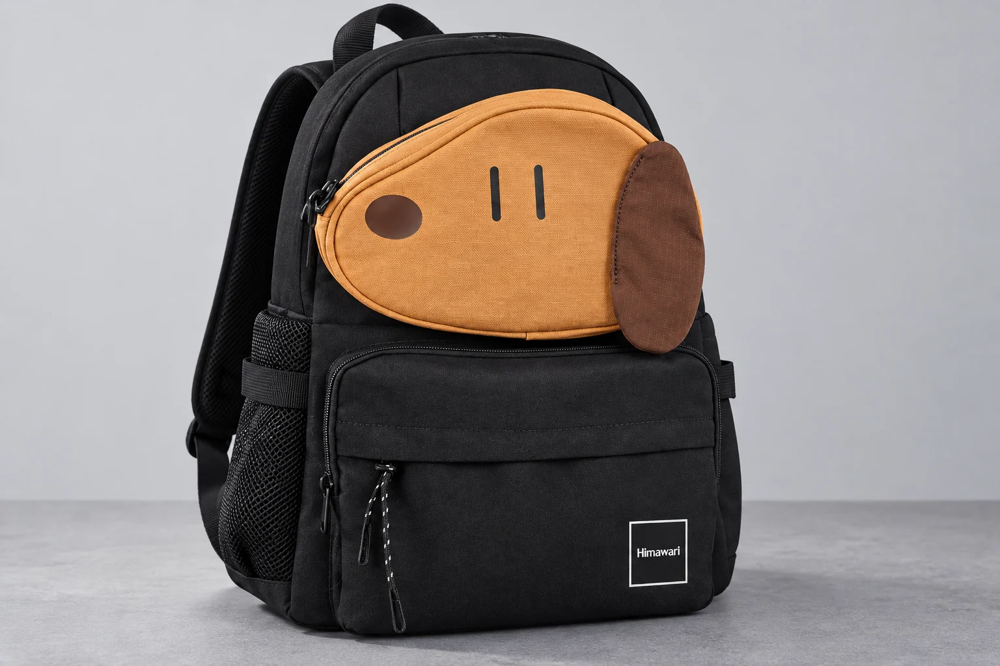

No.0422와 No.0423, 번호가 커지면 백팩도 더 클까

No.0422와 No.0423을 나란히 보면 뒤의 번호가 더 큰 가방처럼 느껴집니다. 숫자가 하나 올라갔으니 크기도 커졌거나 새 기능을 더한 모델이라고 생각하기 쉽지요. 그런데 두 백팩의 현재 제품 정보를 펼치면 크기의 순서는 한 줄로 정해지지 않습니다. No.0423은 가로와 세로가 더 길지만 앞뒤 폭은 짧습니다. 번호에서 예상한 큰 가방과 실제 치수가 가리키는 모양 사이에 차이가 있습니다.
두 번호의 명명 규칙은 확인하지 못했습니다. 이웃한 번호라는 이유만으로 같은 가방의 소형과 대형, 이전형과 개선형으로 묶을 근거도 없습니다. 여기서는 실제 판매 항목 두 개를 정해 어느 방향이 달라지는지 비교합니다. 숫자 순으로 후보를 지우기 전에 자신이 원하는 변화가 가로인지 높이인지 앞뒤 깊이인지 볼 수 있습니다.
번호는 한 칸 올라가도 치수는 엇갈립니다
비교 대상은 No.0422 블랙과 No.0423 브라운입니다. No.0422는 체스트벨트 SET 상품이 아닌 단일 가방 항목을 골랐습니다. No.0423의 옵션 이름은 브라운이지만 실제 사진은 검정 몸체에 황갈색 얼굴과 짙은 갈색 귀 모양이 놓인 배색입니다. 서로 다른 모델과 색상 항목이므로 같은 배색에서 크기만 바꾼 비교로 읽지 않습니다.
| 비교 항목 | No.0422 블랙 | No.0423 브라운 |
|---|---|---|
| 외부 가로 | 30cm | 32cm |
| 외부 세로 | 40cm | 42cm |
| 외부 폭 | 15cm | 13cm |
| 노트북 수납칸 가로 × 세로 | 28 × 25.5cm | 25 × 27.5cm |
| 노트북 수납칸 두께 | 미기재 | 미기재 |
외부 크기를 가로 × 세로 × 폭 순서로 읽으면 No.0422는 30 × 40 × 15cm, No.0423은 32 × 42 × 13cm입니다. No.0423으로 옮겨 갈 때 가로와 세로는 각각 2cm 늘고 폭은 2cm 줄어듭니다. 정면에서 비교할 길이와 옆에서 비교할 길이가 반대 방향으로 움직이는 셈입니다. 이 관계를 전체적으로 더 크다는 말 하나로 적으면 폭의 차이가 빠집니다.
외부 수치는 제품 정보에 연결된 2026-09-14 제조사 카탈로그의 0422 기준 54페이지, 0423 기준 9페이지를 따릅니다. 생산 시기와 측정 방식에 따라 차이가 있을 수 있다는 안내도 함께 있습니다. 표는 두 모델의 명시된 치수를 비교한 것이며 실물 두 개를 같은 자리에서 재어 얻은 결과는 아닙니다.

가로를 넓히고 싶다면 No.0423을 먼저 볼 수 있습니다
지금 백팩의 정면이 좁고 길게 느껴져 가로로 더 넓은 외형을 찾는다면 No.0423의 32cm가 후보를 살필 이유가 됩니다. 다만 가로만 늘어난 형태를 기대하면 세로 42cm도 함께 보아야 합니다. No.0422의 30cm와 40cm를 기준으로 어느 쪽 길이를 남기고 싶은지 비교해보세요. 번호가 높아서 고르는 대신 바깥 윤곽에서 원하는 두 방향을 고르게 됩니다.
여기서 넓은 파일이나 기기가 더 잘 들어가겠다는 판단으로 바로 넘어가면 표의 다른 줄과 어긋납니다. No.0423의 노트북 수납칸 가로 표기는 25cm로 No.0422의 28cm보다 짧습니다. 바깥 가로는 넓어져도 특정 내부 칸의 가로까지 같은 방향으로 늘지는 않습니다. 가방 전체의 모양이 마음에 드는 이유와 기기를 둘 칸이 필요한 이유를 각각 적어둘 만합니다.
앞뒤 폭을 줄이고 싶다면 선택 이유가 달라집니다
반대로 현재 가방이 등 뒤로 많이 나오는 모양을 바꾸고 싶다면 외부 폭 13cm인 No.0423을 먼저 살펴볼 수 있습니다. 이때 선택 이유는 더 큰 번호나 더 많은 수납이 아니라 더 짧게 표기된 앞뒤 방향입니다. 동시에 정면의 가로와 높이는 No.0422보다 늘어난다는 조건이 붙습니다. 모든 방향을 작게 하고 싶은 사람의 바람과는 다를 수 있습니다.
No.0422의 폭 15cm가 마음에 든다면 그 깊이를 남긴 외형을 후보로 둘 수 있습니다. 그렇다고 폭이 2cm 더 길다는 사실만으로 두꺼운 물건이 더 잘 들어간다고 약속할 수는 없습니다. 두 제품의 안쪽 형태와 입구가 같은 조건이라는 자료가 없기 때문입니다. 폭은 바깥 모양을 비교하는 근거로 쓰고 실제 담을 공간은 해당 칸의 자료로 다시 보아야 합니다.
사진을 같은 크기로 확대하면 이런 차이가 잘 안 느껴질 수 있습니다. 화면에서 차지하는 면적은 이미지의 여백과 표시 크기에 따라 달라집니다. No.0423의 얼굴 포켓이 크게 눈에 들어오는 것과 가방 전체가 더 크다는 판단도 나누어 둡니다. 표의 가로·세로·폭을 곁에 놓고 정면과 옆면 사진을 살펴야 어떤 방향을 보고 있는지 놓치지 않습니다.

기기 칸이 우선이면 비교를 안쪽에서 시작합니다
노트북 수납칸을 쓸 계획이라면 번호보다 표의 아래 두 줄이 먼저입니다. No.0422는 가로 28 × 세로 25.5cm, No.0423은 가로 25 × 세로 27.5cm로 안내됩니다. No.0422 쪽은 가로가 길고 No.0423 쪽은 세로가 깁니다. 외부 치수의 가로 순서와 내부 칸의 가로 순서가 서로 다르므로 외형에서 정한 크기 순위를 안쪽에 그대로 옮길 수 없습니다.
두 칸 모두 두께는 미기재입니다. 사용 중인 기기의 실제 가로·세로와 케이스를 포함한 두께를 놓고 해당 칸의 입구와 닫힘을 확인할 정보가 더 필요합니다. 이 표로 특정 화면 인치의 기기가 들어간다고 정하거나 외부 폭을 빠진 내부 두께에 대신 넣지는 않습니다. 필요한 기기 칸의 가로가 우선인지 세로가 우선인지 정하면 두 모델에 물을 질문도 달라집니다.
어느 쪽이 상위 모델인지 찾던 비교는 여기서 방향을 바꿉니다. 외형의 가로와 세로를 늘리고 폭을 줄인 후보가 필요하면 No.0423을, 가로 30cm와 세로 40cm의 외곽에 폭 15cm가 남는 후보를 보고 싶으면 No.0422를 살펴봅니다. 기기 칸이 우선이면 그 선택을 안쪽 치수에서 다시 대조합니다. 어느 번호든 전부 더 큰 모델이라는 전제 없이 후보로 남길 이유가 생깁니다.
새로 나온 쪽을 찾는 사람에게는 출시 시점이라는 별도 정보가 필요합니다. 번호가 하나 뒤라는 사실에 기능 개선이나 후속 모델이라는 뜻까지 붙이면 치수표가 답하지 않은 내용을 덧붙이게 됩니다. 이 두 제품의 관계를 그런 순서로 설명한 근거는 확인하지 못했습니다. 원하는 기능이 있다면 그 기능의 실제 안내를 두 상품에서 각각 읽는 편이 낫습니다. 번호 순서를 기능 순위로 바꾸는 단계를 건너뛸 수 있습니다.
제품 번호는 같은 모델의 정보를 찾아 연결할 때 유용합니다. 다만 두 번호만으로 수납량이나 개선 순서를 확인할 수는 없습니다. 이번 두 백팩은 가로·세로·폭이 엇갈리고 내부 칸도 다른 비율로 적혀 있습니다. 구매할 색상 항목의 제품 정보를 열어 자신의 선택 이유가 어느 치수에 있는지 짚어보세요. No.0422와 No.0423 사이에서 바뀌는 것은 번호 한 자리보다 구체적입니다.